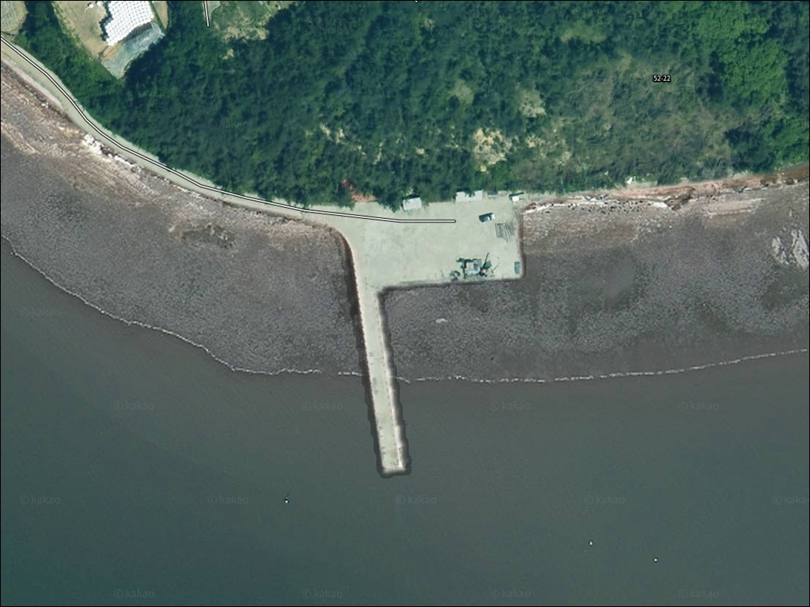
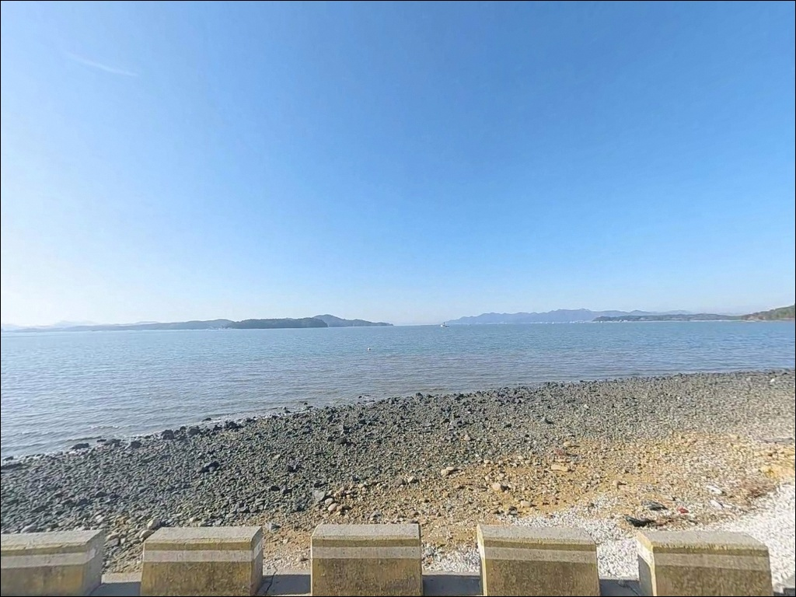
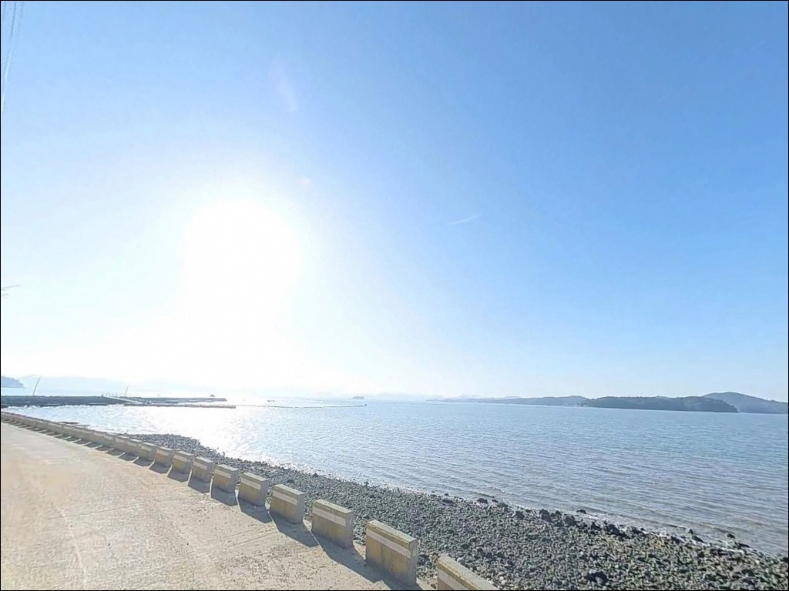
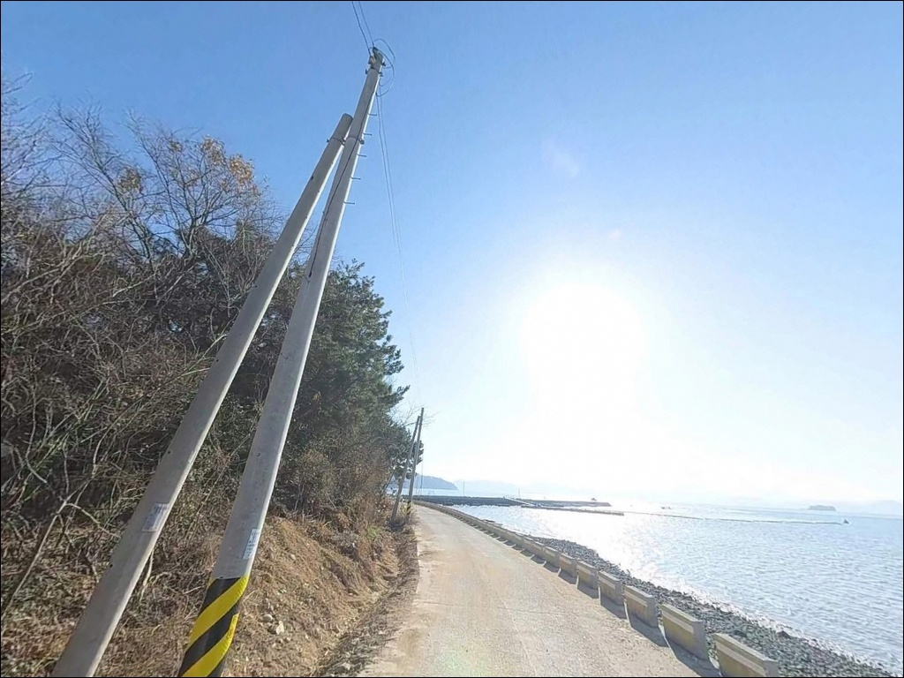
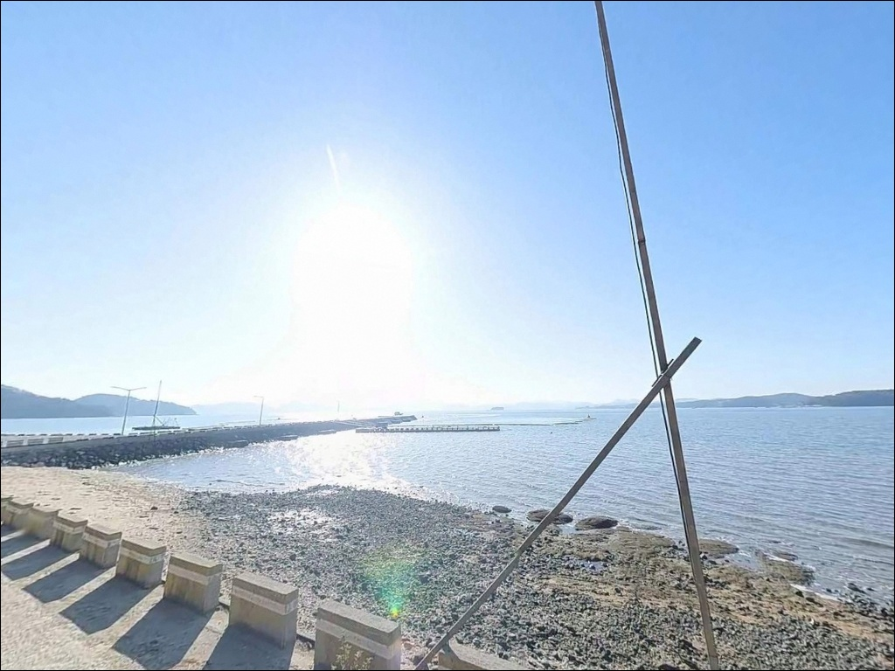
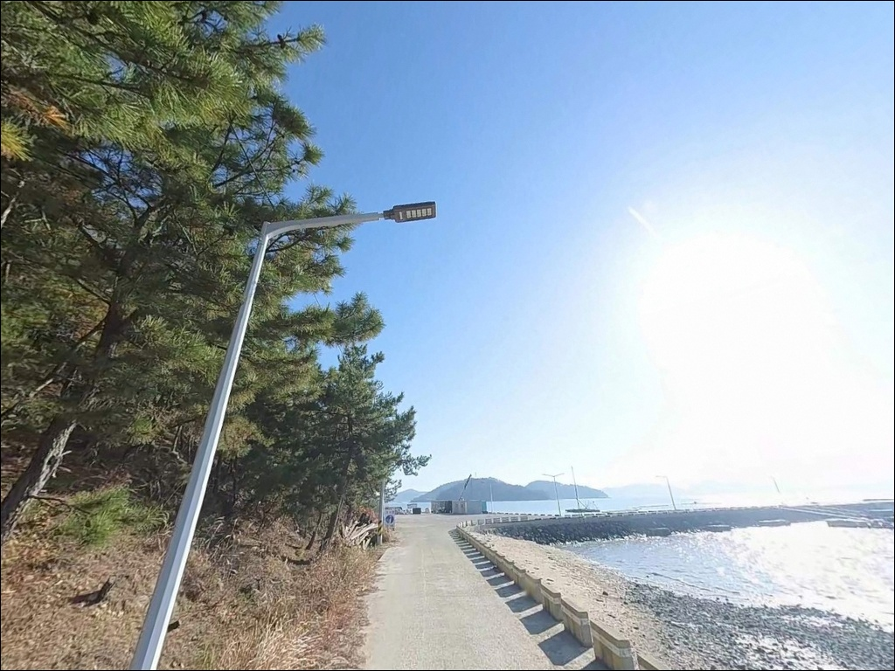
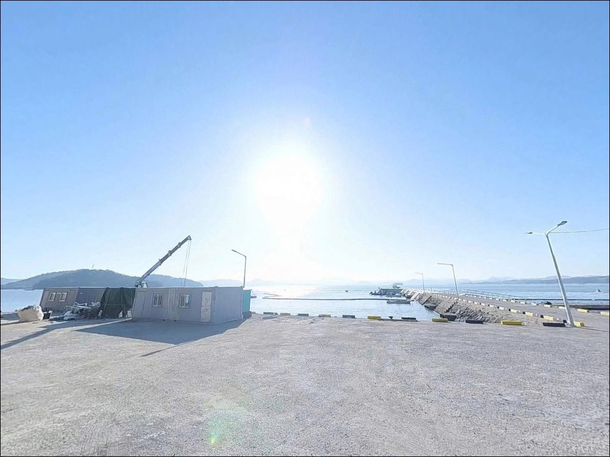
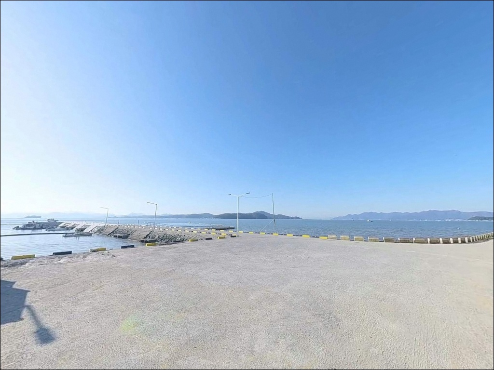
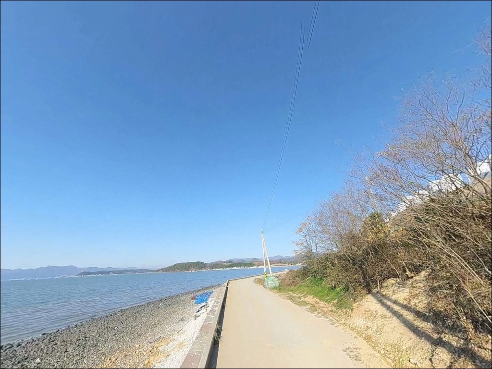

고흥 송림리 2선착장은 간조 때 바닥이 드러나 중들물부터 탐색한다
이 페이지에는 광고(제휴 링크 포함)가 있으며, 광고 링크를 통해 구매하면 운영자가 판매 수익 또는 수수료를 받을 수 있습니다. 포인트 사진: 카카오맵 스카이뷰·로드뷰. 이 페이지의 지도·사진 이미지는 카카오맵의 실제 서비스 이미지와 다를 수 있습니다.


포인트 안내
송림리 2선착장
전남 고흥군 대서면 송림리 224-13
득량만 안쪽에서도 깊숙한 위치에 자리한
이 선착장은, 간조 때 주변 갯벌이 드러나는
내만 지형을 가지고 있습니다.
물때를 맞추지 않고 찾으면
낚시 채비를 풀기도 전에
발 아래가 갯벌로 변해 있는 상황을
맞닥뜨릴 수 있는 포인트입니다.
전남 고흥군 대서면 송림리,
득량만 북서부 연안에 위치한
이 선착장은 외해 파도 영향이 거의 없는
정온 수역에 속해 있습니다.
어촌뉴딜 사업을 통해
방파제 신축과 선착장 증설이 완료된 곳으로,
낚시인들에게 아직 많이 알려지지 않은
조용한 포인트입니다.
이 글은 송림리 2선착장의
진입 동선, 차박 여건, 물때 판단 기준,
지형 기반 낚시 조건에 집중합니다.
조황 단정이나 특정 어종 보장은
이 글의 범위에 포함되지 않습니다.

1. 진입 동선과 포인트 접근성
송림리는 고흥읍에서 국도 27호선을 타고
대서면 방향으로 접근한 뒤,
면소재지(금마리)에서 해안 방향 지방도를
따라가면 닿을 수 있습니다.
마을까지 이어지는 도로는
콘크리트 포장이 완료된 농어촌 수준이며,
폭이 좁은 구간이 일부 포함됩니다.
선착장 진입로는 1차선 수준의 마을 도로입니다.
경사는 완만한 편이어서
일반 승용차나 소형 SUV라면
진입 자체에 큰 어려움은 없습니다.
다만 대형 차량이나 캠핑 장비를 적재한 경우라면
위성지도로 진입로를 미리 확인하고
출발하는 편이 안전합니다.
회차 공간은 선착장 끝단 부근에
확보되어 있는 편입니다.
주차는 선착장 앞 물양장 공간,
방문자센터 앞 광장,
진입로 끝부분 공터를 순서대로 확인하면
자리를 찾을 수 있습니다.
어선 이동 동선을 막지 않는 위치가 우선입니다.

2. 차박 환경과 야간 체류 여건
송림리 2선착장은 민가가 선착장 인근까지
이어진 생활형 어촌 구조입니다.
주차 가능 공간이 넓지 않고
어업 활동 공간과 겹치는 부분이 있어,
차박을 메인 목적으로 삼기에는
독립성이 낮은 편입니다.
야간 환경은 마을 도로를 따라
기본적인 가로등이 설치된 구조입니다.
완전한 암흑 환경은 아니지만,
낚시 자리 주변 조명은 부족할 수 있어
개인 헤드랜턴은 필수로 챙겨야 합니다.
서풍·북서풍이 부는 날에는
바람 영향을 받을 수 있으나
파도 높이 자체는 안정적입니다.
낚시를 마치고 하룻밤 머무는 용도라면
방문자센터 앞 광장 주변이
상대적으로 공간 여유가 있는 편입니다.
단, 어선 조업 시간대에 맞춰
이른 아침 이동 준비를 미리 해두는 편이
마을과 충돌 없이 체류하는 방식입니다.


3. 주변 편의시설 및 인프라 현황
선착장 반경 3km 이내에는
편의점이나 마트를 기대하기 어렵습니다.
어촌뉴딜 사업으로 방문자센터가 조성되어 있으나,
낚시 용품 구입이나 식사는
반경 6km 이내 대서면 소재지에서
해결해야 합니다.
대서면 금마리 소재지에는
소규모 상점과 식당이 분포하고 있습니다.
주유는 대서면 내 SK 주유소를 이용할 수 있으며,
편의점·마트·병원이 집중된 고흥읍까지는
차량으로 약 25~30분 소요됩니다.
식수·얼음·낚시 소품·연료는
출발 전에 완비하고 진입하는 편이 현실적입니다.
응급 상황 발생 시
남양면 보건지소나 대서면 내 약국을
우선 이용할 수 있습니다.
출발 전에 응급 연락처와 가까운
의료기관 위치를 확인해두는 것이 기본입니다.

4. 진입 전 반드시 챙겨야 할 준비사항
송림리 2선착장에서 가장 먼저 확인할 것은
물때입니다.
내만 깊숙한 위치 특성상
간조 시에는 선착장 주변 갯벌이 드러나
낚시 자체가 불가능해집니다.
바다타임에서 대서면 기준 물때를 확인하고
중들물 이후부터 만조 전후를 노려
출발 시각을 맞추는 것이 기본 전략입니다.
득량만 일대는 내만 특성상
기상 변화가 상대적으로 완만하지만,
서풍·북서풍이 강해지는 날은
파도보다 체감 추위와 채비 컨트롤에 영향을 줍니다.
출조 당일 아침 기상 예보를
다시 한번 확인하는 것이 좋습니다.
여분 채비도 넉넉하게 준비하면
현장에서 당황할 일이 줄어듭니다.
이 선착장은 어선 계류와 양식 어구 이동이
실제로 이루어지는 생활형 공간입니다.
어선 이동 동선과 슬로프 구간은
낚시 자리 선택 시 피하는 것이 매너이며,
야간에는 헤드랜턴과 구명조끼를
반드시 착용하고 자리에 앉아야 합니다.

5. 지형 기반 낚시 여건 분석
송림리 2선착장이 속한 득량만은
고흥반도·보성·장흥이 둘러싼
반폐쇄형 내만입니다.
외해 너울성 파도가 직접 들어오지 않아
채비 컨트롤이 안정적이라는 점이
이 포인트의 가장 큰 장점입니다.
선착장 전면 수심은 만조 시 3~5m 내외로
원투 채비가 안착하기에 무리 없는 구조입니다.
바닥 지형은 갯벌과 모래가 혼재하며,
방파제 기초부 주변에는 돌 혼합 지형이
형성되어 있습니다.
선착장 전면으로 멀리 투척할수록
만 중앙 수로 방향으로 수심이 깊어지는 구조라,
장타 위주로 바닥층을 탐색하는 방식이
이 포인트에 어울립니다.
조류는 만 입구 방향으로 흐름이 형성되지만,
강한 본류보다는 완만한 정체성 흐름에 가깝습니다.
물때에 따라 조류 강도가 달라지므로
들물 중간 타이밍에 입질이 집중되는 경향이 있습니다.
이 일대 최신 조황은 출조 전에 꼭 검색해 보시기 바랍니다.
검색 키워드로는 "고흥 대서면 낚시",
"득량만 원투 조황"이 유용합니다.


낚시 스타일별 공략법 — 이 지형에서 유효한 방식 3가지
이 포인트에서 가장 어울리는 낚시는
원투낚시입니다.
선착장 끝단에서 만 중앙 수로 방향으로
장타를 보내면 뻘모래 바닥 구간을 공략할 수 있습니다.
이 지형에서 기대해 볼 수 있는 어종은
붕장어, 도다리, 보리멸, 노래미이며,
가을~초겨울이 붕장어 조건이 올라오는 시기입니다.
찌낚시도 이 포인트 조건에 잘 맞습니다.
만조 시 방파제 콧부리와 선착장 끝단 인근에서
들물 타는 조류를 따라 흘리는 방식이 기본입니다.
내만 특성상 채비가 빠르게 흘러가지 않아
예민한 채비 조정이 가능하며,
가을 야간 감성돔을 노리는 시기에
집중력 있게 운용할 수 있는 방식입니다.
라이트 루어도 활성도 높은 시기에는
노려볼 만합니다.
방파제 외측 기초부 주변 돌 혼합 지형은
볼락과 노래미가 붙을 수 있는 구조입니다.
소형 지그헤드 채비로 경계선을 천천히 탐색하면
손맛을 볼 기회가 생깁니다.
득량만 권역에서는
봄과 가을에 갑오징어 에깅 시즌이 형성되는 편이며,
방파제 외측 방향으로 에기를 흘려보는 방식도
탐색할 수 있습니다.

7. 대안 포인트와 플랜 B 동선
물때 조건이 맞지 않거나
선착장 주차 여건이 여의치 않을 때의
첫 번째 대안은 신기항입니다.
송림리와 동일한 어촌뉴딜 사업 구역에 속해
방파제 시설이 정비된 상태이며,
외항 포인트가 일부 형성되어 있어
낚시 자리 선택 폭이 넓습니다.
수심 확보가 더 안정적인 포인트를 원한다면
약 4km 거리의 안남해수욕장 방파제를
대안으로 삼을 수 있습니다.
규모가 크고 주차 여건이 비교적 나은 편이라
처음 이 권역을 탐색하는 낚시인이라면
안남 방파제를 기점으로 잡고
송림리를 병행 탐색하는 동선이 효율적입니다.
차박을 겸한 이동을 원한다면
약 11km 거리의 남양면 선정진 방파제가
득량만 권역에서 화장실 접근성과
공간 여유가 비교적 나은 대안입니다.
녹동항 방파제는 고흥 권역 최대 규모 포인트로,
다양한 낚시 방식을 운용하기에
가장 안정적인 선택지입니다.

물때만 맞추면
조용한 내만이 달리 보이는 포인트입니다
갯벌과 뻘모래 바닥이 혼재한 득량만 내만에서
원투낚시나 찌낚시를 즐기는 낚시인이라면
송림리 2선착장의 지형 조건은
충분히 탐색해볼 만한 구조입니다.
파도 걱정 없이 차분하게 채비를 운용할 수 있는
정온 수역이라는 점이
이 포인트의 가장 실질적인 장점입니다.
다만 간조 시 갯벌이 드러나는 지형 특성상
물때 계산 없이 찾으면
자리를 깔 공간조차 없는 상황을 맞게 됩니다.
물때 확인, 자급 준비, 진입로 사전 점검,
이 세 가지를 갖추고 찾아가면
낚시인이 거의 없는 조용한 내만에서
여유 있는 출조가 가능한 곳입니다.
어촌뉴딜로 새로 정비된 방문자센터 앞 공간에서
하룻밤 조용히 머무는 차박을 겸하고 싶은 분이라면,
어선 조업 시간을 피해 자리를 정하면
득량만 내만의 잔잔한 물소리를 들으며
낚시와 차박을 동시에 즐길 수 있는 출조가 됩니다.